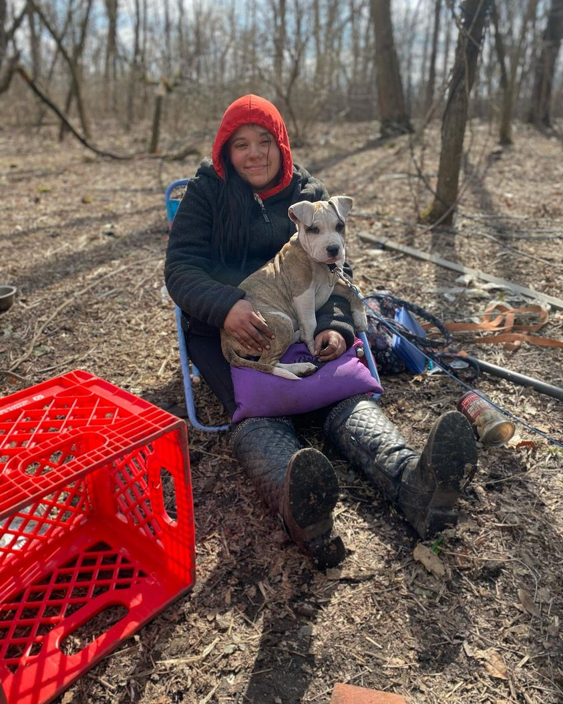

Timeline photos
I think a lot about Aubrey.
She has brought two babies to term out in the woods. I think they are both living with family members.
This picture was taken in March. Now she’s going into yet another winter.
You can judge her all you want. But the fact of the matter is: she feels most comfortable in the woods with her boyfriend Cole.
She isn’t hurting anyone. She almost never asks me for anything. Cole is a prolific scrapper. He loves it. I suspect they have most of their needs met.
But it’s not easy. The city repeatedly marches out into these remote camps to destroy them. Other homeless people destroy their stuff.
How can you scaffold up an existence when everyone is constantly tearing it down?
People with power decimate people with no power because the powerless are “misbehaving.” Why are we so repeatedly dense? Why can’t we see this creates an endless cycle of misery for everyone?
Will we ever evolve into a species that becomes more curious of others and less murderous of those with differences? It sure doesn’t look promising.